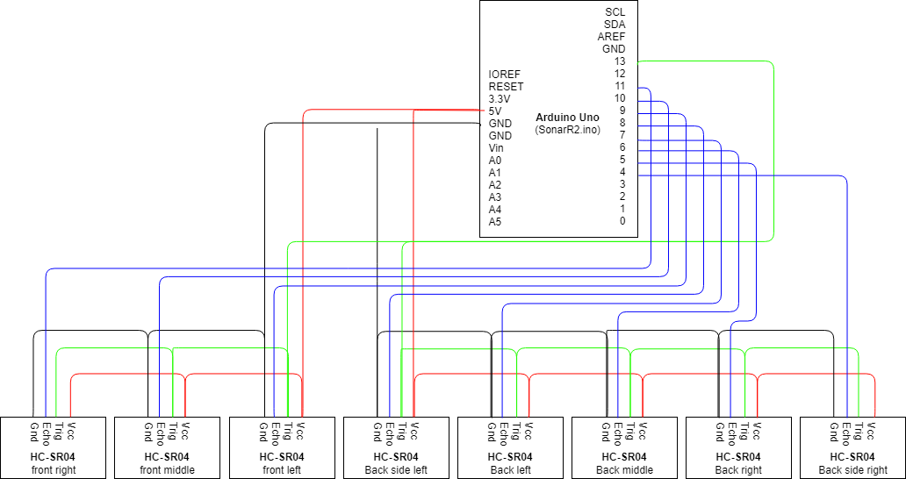

1. ROS master
The ROS master serves to be the center of communication between the different nodes. The ROS master node provides naming and registration services to the rest of the nodes in Willy. It tracks publishers and subscribers to topics and allows for automatic connections to these topics between nodes. The role of the ROS Master is to let the nodes interact with each other without a direct connection.
1.1. Repository
1.2. How to run?
There is an included shell script found within the folder /home/willy/Documents/willy called start-willy.sh, this will start the ROS Master along with all required plug-ins, components and parameters.
To execute this script, open a terminal window and invoke the script as a command:
cd ~/Documents/willy
./start-willy.shFor convenience, a command alias startwilly allows this script to be run anywhere within a command-line environment or terminal window.
1.3. How to run via Docker?
To run only the ROS master the Docker can be used. The Dockerfile of ROS master is automatically built on Dockerhub.
Run the build docker image:
docker-compose upFor development purposes it can be usefull to build the Dockerfile locally and to use this image. The docker-compose.build.yml file builds first the image and after the build start the container.
docker-compose -f docker-compose.yml -f docker-compose.build.yml up2. New ROS master on Lubuntu for Multimaster node for Willy
Because Multimaster is not available for Raspbian, node master node of Willy will be using Lubuntu. ROS.org states that the best way is to use a pre-installed version http://wiki.ros.org/ROSberryPi/Installing%20ROS%20Kinetic%20on%20the%20Raspberry%20Pi
An SD Card Image with Ubuntu 16.04 (LXDE) and ROS Kinetic installed can be downloaded here for the Raspberry Pi 3. The here refers to: https://downloads.ubiquityrobotics.com/ On this site the left button is chosen. This brings to https://downloads.ubiquityrobotics.com/pi.html.
For Willy the latest version (2018-11-15-ubiquity-xenial-lxde) is choosen: https://cdn.ubiquityrobotics.net/2018-11-15-ubiquity-xenial-lxde-raspberry-pi.img.xz
The SD image is also stored on the SharePoint site of Willy.
The image is flashed to the 16 GB SD card with Rufus 3.4, but any flash program can be used.
The standard user on the node is ubuntu with the password ubuntu as is stated on the site of the supplier.
The following adjustments to the image are made: To ensure that the startup scripts from the supplier are disabled:
sudo systemctl disable magni-base
In /etc/ubiquity/env.sh the starting of roscore is already added, through roscore.services
Change /etc/ubiquity/env.sh
remove .local from export ROS_HOSTNAME=$(hostname).local
Change /etc/systemd/system/roscore.service Add extra line after line starting with ExecStart
ExecStartPost=/bin/sh -c ". /home/ubuntu/multimaster.sh
Add file /home/ubuntu/multimaster.sh:
rosrun master_discovery_fkie master_discovery >/dev/null 2>&1 & rosrun master_sync_fkie master_sync >/dev/null 2>&1 &
Update and upgrade the OS:
sudo apt-get update sudo apt-get upgrade
Through the GUI WLAN has to be disabled.
Install openssh server and check status:
sudo apt-get install openssh-server sudo service ssh status
The complete environment of ROS with multimaster is included.
The node on Willy will be the ROS master with portnumber 11311, which is the standard setting.
Enable multicast feature on the node: edit the /etc/sysctl.conf file and add the following line:
net.ipv4.icmp_echo_ignore_broadcasts=0
Edit /etc/hostnode:
Change hostname to brainnode
edit /etc/hosts:
add all the hosts of Willy and Skylab. The correct info can be found on SharePoint.
Install VNC on the node:
sudo apt-get update sudo apt install xfce4 xfce4-goodies tightvncserver
Add a secure password on VNC with:
vncserver
Reference for VNC: https://www.digitalocean.com/community/tutorials/how-to-install-and-configure-vnc-on-ubuntu-16-04 :numbered: :toc: :toclevels: 5 :icons: font
3. Sonar
As the LIDAR is not able to detect glass consistently, Willy is equipped with 8 sonar sensors. The sensors used are HC-SR04 ultrasonic sensor. These sensors are mounted on 3D printed ball joints, as shown in the picture below.

3.1. Repository
3.2. Electrical setup
The sensors are connected to an Arduino Uno with one continuous wiring harness, provided with connectors. The power and trigger wires are looped and the echo signal is separated as can be found in the schematic below:

3.3. Software
3.3.1. Arduino Uno
The code on the Arduino which reads out the sonars is pretty straightforward. It will calculate the distance and limit the value to 2 meters. The data is read out and send via serial sequentially a.s.a.p.
3.3.2. PI
The PI will tag the sensors (left, right etc.) and publish the data to ROS. The Pi will not start automatically. Therefore the following steps have to be taken:
On willy’s laptop:
ssh ubuntu@192.168.0.13
password can be found in sharepointMake sure ROS master runs on the laptop:
startwillyThen this command will start the Pi:
./start_sensornode.sh3.3.3. RVIZ
RVIZ will visualise the data of the sensors and represent the locations and distance for each sensor.
3.4. Advice
The current sonar sensors, the HC-SR04, are only capable of pinging distance in a straight line, with a very narrow F.O.V. This is detrimental to WTR’s ability to detect obstacles such as table legs, especially when reversing. If this proves to be a serious detriment, parking sensors or industrial ultrasonic sensors could be the solution.
3.5. Notes
3.5.1. View cone
The view cone of the sensor is very limited. It will only detect a obstacle if the angle with the sensor straight in line. This is a drawback for the effectiveness on detecting small objects like table legs.
3.5.2. Minimum range
The minimum range is 5 cm. If a object gets closer the Arduino will report 2m distance.
4. LIDAR
The LIDAR is a node to process the raw LIDAR information to the LIDAR topic.
4.1. Repository
4.1.1. Background
The previous group has also done research on a LIDAR sensor. Unfortunately the previous documentation stated that it was not possible to link a LIDAR to ROS. Also other methods where somehow researched by a previous group but not in the form of a LIDAR. (Research localization system v1.1, 2017)
A LIDAR sensor uses a laser to measure distance. With these measurements the sensor makes a map of all the objects in the environment.

The previous group has done some research concerning LIDAR and the link to ROS, but came to the conclusion that it is not possible to create a link between LIDAR and ROS. Therefore they decided to not implement the LIDAR sensor.
After doing some research it was found that it is possible and supported to link ROS to a LIDAR sensor.
At this stage LIDAR is used to navigate with Willy. The sensor is placed at the front of the robot.
The LIDAR is connected with an Ethernet connection via a switch to the pc. :numbered: :toc: :toclevels: 5 :icons: font
| this page has to be updated. No longer relevant |
5. Localization and navigation
The localization and navigation stack is a collection of nodes and plug-ins which process LIDAR data among others and use it to navigate on a pre-generated map.
5.1. Repository
5.2. How does it work
5.2.1. Navigation
[map_server|1] -----\ [map_server|2]---\
\ \
[lidar node] -> [lidar_filters] -> [laser_scan_matcher] -> [AMCL] ------> [move_base] -> [cmd_vel]
\ / /
\-----------------------------------/----------------/
The LIDAR node captures the data from the hardware device and puts it on the service bus. The LIDAR data is not always perfect since the metal frame of the robot creates invalid data points. These invalid data points confuse the algorithms. This is fixed by adding the 'scan_to_scan_filter_chain' node from the 'laser_filters' package. Using a chain of two filters it is possible to "crop" the LIDAR data. This data is fed to the other nodes.
The 'laser_scan_matcher' node uses the filtered LIDAR data to create odometry data based on the moving data points. The odometry data only tells the stack how much it has moved relative to its starting position. Odometry data is also prone to drift especially when using the 'laser_scan_matcher' since it can’t handle big empty spaces. This is where the 'AMCL' node comes into play. The 'AMCL' node takes into account: the estimated starting position, odometry offset from the starting point, lidar data and a lidar map. It can determine the odometry drift based on the lidar data and the map and compensate with a second offset. Because the 'AMCL' also takes into account the map we now have localization.
'AMCL' uses the first instance of the 'map_server', this map server publishes the raw map which was generated by 'hector_map', just slightly cropped and rotated to improve performance. The 'move_base' node uses the second instance of the 'map_server' which publishes a modified map in which incorrectly mapped walls are manually filled in. This is done because the LIDAR can’t see reflective materials like glass or mirrors. By filling in these areas the 'move_base' will not try the navigate through glass. The 'AMCL' node however needs a map is is as close to the LIDAR data so it can’t localize itself.
This position is then fed into the 'move_base' node which uses the LIDAR data and map to create a maps of obstacles called costmaps. It then uses the position from 'AMCL', the costmaps and a goal to generate a path and start giving commands to the robot to follow that path as closely as possible
5.2.2. Costmaps
RViz shows us three total maps, of which two are the Global costmap and the Local costmap. A small example the view of these maps in RViz is as following:

The gray areas are the pre-generated map of the fifth floor in the T-building of Windesheim. Light gray areas show where Willy can move freely and dark gray areas equal an obstacle (such as a cabinet) or a wall.
The Global costmap is seen as the red/cyan areas around certain walls and obstacles and calculates an inflated distance for each of these obstacles by a set amount, which we’ve set to around 10 centimeters.
The local costmap is shown as the white cube around the robot. The LIDAR marks obstacles and walls on the local costmap using the distance its lasers measure, visualized as red squares, upon which the local costmap will inflate the obstacle’s distance by about 5 to 10 centimeters, indicated by a black area surrounding the red dots. The cones of the ultrasonic sensors indicate their range, and the navigation stack will mark any obstacle the sensors detect as a small black dot/line in its range, enough to be detected as an obstacle by the navigation stack.
| Unfortunately, it is unknown if the cones could be replaced by beams in order to reflect the current capabilities of the ultrasonic sensors, as they only measure in a straight line. |
The obstacles persist for a set amount of time, but will not always be removed automatically, after some time or by walking around the robot, the obstacles could clear, but it is also possible to refresh the costmaps by issuing this command in a terminal window:
rosservice call /move_base/clear_costmapsThe "footprint" of the robot, visible as the green rectangle in the center, indicates its location and is used in calculating whether or not WTR is in an obstacle or not. It is a key for obstacle detection to work using the following rules:
-
If the green rectangle touches a red dot, the robot will assume it has hit an obstacle
-
If the green rectangle is inside a black area, it will recognize that it’s close to an obstacle, slow down and try to avoid the obstacle to prevent collision.
-
If the centerpoint of the robot (base_link) touches a black area, the robot will stop as it assumes it has hit an obstacle.
5.2.3. Mapping
[lidar node] -> [lidar_filters] -> [hector_mapping] -> [map_saver]
\---------> [rosbag capture]
The mapping process uses the same LIDAR data and LIDAR filters. The raw LIDAR data can also be captured in a bag-file so this mapping process can be redone off-line. The LIDAR data is fed into the 'hector_mapping' node which will generate a 2d map based on the LIDAR data.
However, this process is not always perfect. It has trouble seeing transparent and reflective surfaces. Objects like chairs and tables can be problematic since the surface area of the legs are small and easy to miss if the LIDAR is not close enough. Furthermore if objects become larger above the height at which the LIDAR measures the object may be drawn too small on the map causing collisions.
The 'hector_mapping' node is not great at erasing objects from the map. So it is best to map a area when there are no moving objects like humans.
5.3. How to run?
To run the localization and navigation stack you need to have an instance of the ROS Master and the LIDAR node running. If you have used the command alias startwilly, the navigation stack is run automatically along with the start of the ROS Master.
To start autonomous navigation manually, you need to invoke the start-up script by hand:
cd ~/Documents/willy/components/navigation_stack/
./start-live-navstack.shThe navigation stack requires a LIDAR-generated map of the environment it must navigate in. This map can be built by manually moving the robot using the keyboard node and running the mapping process. The mapping process can be started with the following command
./start-live-mapping.shIn order to use this map a saved copy is needed. To save the map that is on the service bus use the following command:
rosrun map_server map_saver -f {name of save file}It has proven to be useful to test the software in a VM when access to the hardware is limited. To do so run the 'start-sim-navstack.sh' or 'start-sim-mapping.sh' instead of the commands listed above. These commands will start a replay of a rosbag containing lidar data instead of the real thing. They also set a parameter which tells the nodes to accept out of date timestamps which are required to function in a simulated environment :numbered: :toc: :toclevels: 5 :icons: font
6. Motor controller
Willy is based on a mobility scooter. The motor driver was once manually controlled by a joystick unit, but that was replaced by an arduino mega serving as motor controller. The motor controller is subscribed to the drive topic from ROS, reads out the wheel encoders, compares them and controls the motors of Willy accordingly. This is explained briefly, for further details please read the hardware design and technological design documents. motor controller listens to the "command velocity" topic and controls the motors of Willy.
6.1. Repository
6.2. Starting the motor controller
Normally the motor controller is started automatically when the command below is executed:
startwillyTo start the motor controller manually, execute this command:
motorconWhen the motor controller is started, the emergency button has to be pressed and reset otherwise no action will be seen.
6.3. Main program (MotorTest.ino)
The main program communicates with ROS, handles the signals generated by the encoders (by using encoder.h) and controls the motors with a calculated output (from controlloop.h). Important functions are briefly explained below.
6.3.1. Arduino reading /cmd_vel messages from ROS
The geometry twist messages broadcast by ROS consist of two variables, turn and run. Turn will be the turn speed in rad/s and run will be the drive speed in m/s. The function reading these messages can be seen below.
//Turn and drive variables are read out from ros and stored in irun and idrive.
void messageCb(const geometry_msgs::Twist& twistMsg)
{
irun = twistMsg.linear.x;
iturn = twistMsg.angular.z;
// store time at which message was received so old instructions are not repeated.
time_stamp = millis();
}6.3.2. Writing to the drive controller
The code below is used to write to the drive controller of the wheelchair. This is done by serial communication.
/* Send values to motorcontroller of the mobility scooter by serial communication.
* The motorcontroller will automatically turn off the brakes and the motors will provide torque
*/
void SendToMotor(int Setdrive, int Setturn)
{
int drive = Setdrive; //Set value from ros to motorcontroller
int turn = Setturn; //Set value from ros to motorcontroller
//Create data array
data[0] = 0x6A; //-Datagram always start with 0x6A
data[1] = drive; //-Drive +-100
data[2] = turn; //-Turn +-100
data[3] = 0; //-Driv mode
data[4] = 0x0c; //-Drive mode: 0x0c=fastest
data[5] = 0xff - (data[0] + data[1] + data[2] + data[3] + data[4]); //-Checksum
// Writing the data to the motorcontroller
for (unsigned char i = 0; i < 6; i++)
{
Serial1.write(data[i]);
}
}6.3.3. Broadcasting to the emergency channel
Every iteration within the critical loop of the state of the emergency button will be broadcast. The motor controller will interrupt the circuits on a hardware level when the button is pushed. But in order to prevent wind-up within the PID controller the ROS messages is spoofed by zero. This is done by the function below.
//safety
void Stop()
{
irun = 0;
iturn = 0;
SendToMotor(0, 0);
}6.4. Encoders
The encoders are attached to both front wheels. Encoders.h is included in the main program of the motor controller and calculates the speed of the wheel in m/s. The output of the encoders correspondents with the figure below. The code written to decode these outputs to stable speed is quite complex and uses various functions. Therefore we advise to read tech design to get a better understanding if needed.

6.5. Controlloop
The main control loop consist of two PID controllers (TurnController and DriveController). The reference speed (irun and iturn) is compared with the actual speed and the difference (error) is send to the PID controllers. This is implemented in the function below.
//Function sets reference, calculates error, then activate the calculation of outputs by the turn and drive functions.
SetInputRef(float Turn_Input, float Drive_Input, float Speed_Sensor_L, float Speed_Sensor_R)
{
if(Turn_Input == 0 && Drive_Input == 0)
{
DriveController.Reset();
TurnController.Reset();
}
//calculate speed at which the robot is rotating, unit: [rad/s]. 0.6 is the distance between the wheels in meters.
Turn_Speed = (Speed_Sensor_R - Speed_Sensor_L)/0.6;
//calculate the speed at which the robot is moving, unit: [m/s]. 0.5 is used to provide an average between both wheels.
Drive_Speed = (Speed_Sensor_R + Speed_Sensor_L)*0.5;
//calculate errors.
Turn_Error = Turn_Input - Turn_Speed;
Drive_Error = Drive_Input - Drive_Speed;
//errors are send to both controllers to get an output signal.
Turn_Output = TurnController.Get(Turn_Error);
Drive_Output = DriveController.Get(Drive_Error);
}6.6. PID controller
An PID controller chosen to control the turn and drive speed of Willy. The animated gif below explains the basic function of the three different variables.

6.6.1. Implementation
These variables are set on start by using the initialize function (constructor) and have been tuned to make willy drive smoothly. Below the code for the PID variables construction and PID calculation can be found. The math on these calculations seems easy but the theory is rather complex, we advise to get a basic understanding, before starting to tune or even change our implementation as currently the robot is slow but very stable. For more information we refer you to the link below.
void Initialize(float P, float I, float D)
{
K_P = P;
K_I = I;
K_D = D;
}
float Get(float Error)
{
//Calculate Output with PID in velocity form.
float Output = 0;
Output = Output_1 + K_P * (Error - Error_1);
Output += K_I * Error;
Output += K_D * (Error - 2 * Error_1 + Error_2);
//save parameters
Output_1 = Output;
Error_2 = Error_1;
Error_1 = Error;
//limit output to max 100 and min -100
if (Output > 100)
{
Output = 100;
}
if (Output < -100)
{
Output = -100;
}
return Output;
}6.6.2. PID Viewer
In order to get a better understanding of what is happening and to ease tuning a special program is written. This program was used on a seperated laptop and connects via serial to the Arduino. The program constist of basic graphs representing the input, error and output signals. A separate Serial to USB converter is needed to communicate with the Arduino Mega, since the USB port needs to be connected to the laptop.

When building for the first the Platform.io will add some files in the .vscode directory that can be ignored. Its not recommended to add them to GiT. The files have hard-coded paths containing the username and are ignored. To flash the Arduino simply press Upload in the Plaform.io extension.
Alternatively, the Arduino IDE could be used but mileage may vary. :numbered: :toc: :toclevels: 5 :icons: font
7. Joystick
The joystick is a node to process the raw joystick input signal to the direct input topic.
7.1. Repository
7.2. Prerequisites
The Laptop requires the device /dev/input/js0 to be connected to the host. In most cases a (knock-off) PlayStation 3 or Xbox 360 controller will do the trick. The controller requires to have the front right shoulder button marked R1 be pressed when controlling Willy with the left analogue stick. This component uses the default settings for teleop twist joy package, which may require a bit practice to maneuver through the building. :numbered: :toc: :toclevels: 5 :icons: font
Kinect
1. Development choices
When analysing Willy the group of 2019 Semester 1 came to the conclusion that there where problems with Willy detecting objects at certain heights. To come up with a soloution the group researched different sensors to find the right one for object detection on certain heights. As a result the Kinect was chosen as it suited the needs and was available to use.
2. Kinect Specs
The version of the Kinect is version 1. That is because it was available to use and meant no delays in the project while waiting for the product to arrive. In the future it might be a good idea to upgrade to a Kinect 2 as the Kinect 2 has better specs.
| Feature | Kinect 1 |
|---|---|
Color Camera |
640 x 480 @30 fps |
Depth Camera |
320 x 240 |
Max Depth Distance |
apr. 4.5 m |
Min Depth Distance |
40 cm in near mode |
Depth Horizontal Field of View |
57 degrees |
Depth Vertical Field of View |
43 degrees |
Tilt Motor |
Yes |
Skeleton Joints Defined |
20 joints |
Full Skeletons Tracked |
2 |
USB Standard |
2.0 |